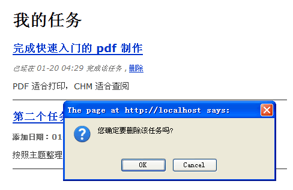
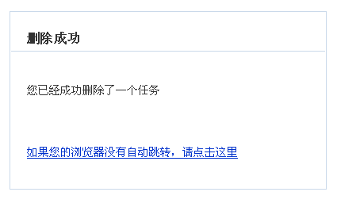

修改和删除任务
修改工作非常简单，在 tasks 控制器中添加如下代码即可：
function actionEdit() { // 查询指定 ID，并且其所有者是当前用户的任务（禁止修改他人的任务） $task = Task::find('task_id = ? AND [owner.user_id] = ?', $this->_context->task_id, $this->_app->currentUserObject()->id())->query(); if (!$task->id()) { // 如果任务的 ID 无效，视图修改的任务不存在或者不是当前用户创建的 return $this->_redirect(url('tasks/index')); } // 构造表单对象 $form = new Form_Task(url('tasks/edit')); // 修改表单标题 $form->_subject = '编辑任务'; // 添加一个 checkbox 到表单 $form->add(QForm::ELEMENT, 'is_completed', array( '_ui' => 'checkbox', 'checked_by_value' => true, 'caption' => '该任务已完成', )); // 添加一个隐藏字段到表单 $form->add(QForm::ELEMENT, 'task_id', array('_ui' => 'hidden')); if ($this->_context->isPOST() && $form->validate($_POST)) { // changeProps() 方法可以批量修改 task 对象的属性，但不会修改只读属性的值 $task->changeProps($form->values()); // 根据是否选中“已完成”检查框来设置任务的状态 $task->completed($form['is_completed']->value); // 保存并重定向浏览器 $task->save(); return $this->_redirect(url('tasks/index')); } elseif (!$this->_context->isPOST()) { // 如果不是 POST 提交，则把对象值导入表单 $form->import($task); } $this->_view['form'] = $form; // 重用 create 动作的视图 $this->_viewname = 'create'; }
这个方法完成下列工作：
- 首先根据指定的 task_id 和当前用户ID查询任务对象，如果失败则重定向浏览器。这可以有效阻止用户尝试编辑不属于自己的任务。
- 如果是 POST 提交，并且表单通过了验证，则更新任务信息，并且根据是否选中了“已完成”检查框来修改任务状态。最后保存修改并重定向浏览器。
- 不是 POST 提交，则将任务对象数据导入表单，以便在表单中显示要编辑的内容。
上述代码中，之所以修改任务状态必须调用 completed() 方法，是为了因为 task 模型的 is_completed 属性非常重要，不应该“无意”中被修改。明确的 completed() 方法调用就可以避免此问题。而且当任务状态改变为“已完成”时，还需要设置任务的 completed_at 属性，以记录任务完成的时刻，completed() 方法可以同时完成这项修改。
所以我们还要在 task 模型中添加 completed() 方法：
/** * 明确修改任务的状态 * * @param boolean $completed * * @return Task */ function completed($completed) { $completed = (bool)$completed; if ($completed && !$this->is_completed) { // 如果任务状态从“未完成”变成“已完成”，则保存完成任务的时刻 // changePropForce() 可以强制改变一个只读属性的值 $this->changePropForce('completed_at', time()); } elseif (!$completed) { // 如果任务状态设置为“未完成”，则清理掉 completed_at 记录的时间 $this->changePropForce('completed_at', null); } $this->changePropForce('is_completed', $completed); return $this; }
相比传统的做法，面向对象的方式在初期会需要更多的代码。但是这些代码保证了逻辑的严密性和数据的有效性，应用软件规模越大，这种做法带来的好处就越多。而且随着应用规模的逐渐增长，面向对象充分重用逻辑与代码的优势就会体现出来，最终可以获得一个更健壮、内部更整洁的系统。
实际运行效果：

修改状态后的任务
删除任务
删除任务功能非常简单：
function actionDelete() { // destroyWhere() 方法的参数和 find() 方法完全一致 Task::meta()->destroyWhere('task_id = ? AND [owner.user_id] = ?', $this->_context->task_id, $this->_app->currentUserObject()->id()); return $this->_redirectMessage( '删除成功', '您已经成功删除了一个任务', url('tasks/index')); }
修改一下 app/tasks/index.php 视图，将删除任务的连接加进去：
<p class="meta"> <?php if ($task->is_completed): ?> <em>已经在 <?php echo date('m-d H:i', $task->completed_at); ?> 完成该任务</em> <?php else: ?> <strong>添加日期：<?php echo date('m-d H:i', $task->created); ?></strong> <?php endif; ?> , <a href="<?php echo url('tasks/delete', array('task_id' => $task->id())); ?>" onclick="return confirm('您确定要删除该任务吗?');">删除</a> </p>
运行效果：

删除提示

成功删除
$Id: tasks-edit.texy 2295 2009-03-10 07:48:18Z dualface $